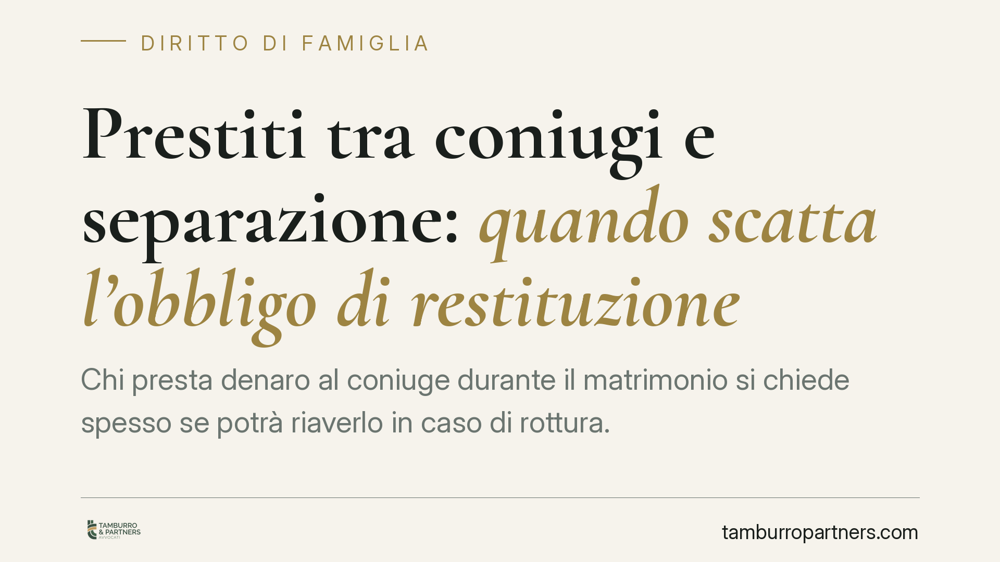

Prestiti tra coniugi e separazione: quando scatta l'obbligo di restituzione
Chi presta denaro al coniuge durante il matrimonio si chiede spesso se potrà riaverlo in caso di rottura. La Cassazione ha chiarito che un prestito subordinato alla separazione è valido, ma solo a precise condizioni. Vediamo quali sono i requisiti e cosa cambia in concreto quando la coppia si divide.

Il caso
Durante il matrimonio è frequente che uno dei coniugi trasferisca somme all'altro: per un investimento, per estinguere un debito personale, per acquistare un bene. Finché il rapporto regge, la questione resta sullo sfondo. Diventa spinosa quando la coppia si separa e chi ha versato il denaro pretende la restituzione.
La domanda è duplice. Quel trasferimento era un prestito o una liberalità, cioè un dono? E se era un prestito, la separazione fa scattare davvero l'obbligo di restituire?
Inquadramento normativo
Il punto di partenza è l'art. 1813 del Codice civile, che definisce il mutuo: il contratto con cui una parte consegna all'altra una somma di denaro, con obbligo di restituzione. La restituzione, quindi, non è un accessorio: è l'essenza stessa del prestito. Se manca l'obbligo di riconsegna, non c'è mutuo ma donazione.
Le parti possono legare la restituzione al verificarsi di un evento futuro e incerto, ossia a una condizione (art. 1354 c.c.). Nulla vieta che quell'evento sia la separazione dei coniugi. La Corte di Cassazione ha confermato che un accordo di questo tipo è valido: il prestito esiste, e diventa esigibile quando la condizione – la separazione – si realizza.
Un limite però va rispettato. Gli artt. 143 e 160 c.c. fissano diritti e doveri inderogabili dei coniugi (assistenza morale e materiale, contribuzione ai bisogni della famiglia). Un accordo economico tra marito e moglie non può aggirare questi obblighi né trasformarsi in uno strumento per condizionare le scelte personali dell'altro. Deve restare un rapporto patrimoniale lecito, non un patto che "compra" o "sanziona" la fine del matrimonio.
Cosa cambia in concreto
La distinzione decisiva è tra dono e prestito. Chi versa denaro e poi ne chiede la restituzione deve dimostrare che si trattava di un prestito, non di una liberalità. Senza prova, il giudice tende a qualificare il trasferimento come atto a fondo perduto, tipico della vita coniugale, e non c'è nulla da restituire.
Da qui l'importanza della forma. Una scrittura privata che documenti l'importo, la causa (prestito e non regalo) e le condizioni di restituzione cambia radicalmente la posizione del creditore. In assenza di un documento, resta solo la parola contro la parola, spesso insufficiente.
Attenzione anche al tipo di separazione. Se l'accordo lega la restituzione alla separazione giudiziale – quella pronunciata dal tribunale – la somma torna esigibile quando quella specifica condizione si verifica. Una separazione consensuale o una semplice crisi di fatto, se non contemplate nel patto, potrebbero non far scattare l'obbligo. La formulazione della clausola, quindi, va calibrata con cura.
Cosa fare in concreto
- Mettete per iscritto ogni trasferimento rilevante. Redigete una scrittura privata che indichi importo, data, causa (prestito) e modalità di restituzione. Un accordo verbale, in sede di lite, vale poco.
- Qualificate con precisione la somma. Specificate espressamente che si tratta di un prestito e non di una donazione, per evitare che venga interpretato come regalo tra coniugi.
- Definite con chiarezza la condizione. Se la restituzione è legata alla separazione, indicate quale tipo (consensuale, giudiziale) e da quale momento decorre l'obbligo.
- Conservate le tracce del pagamento. Bonifici, causali e documentazione bancaria sono la prova più solida del trasferimento e della sua natura.
- Fate verificare la clausola a un professionista. Un patto che invade i doveri coniugali inderogabili rischia la nullità: consigliamo di valutarne la tenuta prima di sottoscriverlo.
In sintesi
Il prestito tra coniugi con restituzione condizionata alla separazione è ammesso dal nostro ordinamento. Ma la sua efficacia dipende da due fattori: la prova che si trattava di un prestito e non di un dono, e una clausola che rispetti i limiti posti dagli obblighi coniugali. Chi trascura la forma scritta si espone al rischio concreto di non recuperare nulla.
---
*Contributo informativo a cura di Tamburro & Partners - Avv. Giuseppe Tamburro. Non costituisce parere legale.*
Ogni famiglia ha il suo equilibrio.
Separazione, divorzio, affidamento, assegno: se vuoi un confronto riservato su una specifica situazione, scrivi allo studio. Ti rispondiamo entro un giorno lavorativo.